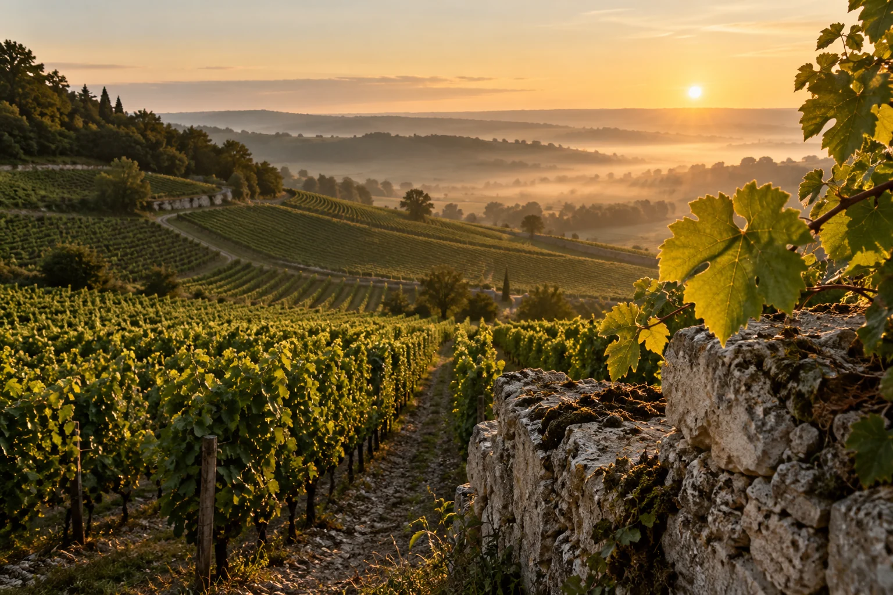

Paris is known worldwide as the home of fine cuisine; a place where becoming a chef is a noble calling. Phoenix may not be Paris, but it is the home of a French woman who heard that calling 30 years ago. Chef Aurore de Beauduy began training with some of France’s most distinguished chefs as a teenager, learning the culinary arts from such Michelin Guide celebrities as Alain Sanderens and Michel Guerard. That is when she learned that her heart belongs in the kitchen. She also learned that to become a chef she would need a strong knowledge and understanding of the “chemistry” of the cooking process. In 1978 she graduated from Cordon Bleu Culinary School in France, then Ferrandi Culinary School in France. Working with chefs like George Blanc, Roger Verger, Pierre Troisgros and Aimer Fournillier, helped to polish her cooking and presentation skills. In 1981, she was hired as a Saucier in the oldest and most prestigious catering establishment in Paris – Potel & Chabot, where she was responsible for creating sauces savored by French Government officials and many celebrities. In pursuit of expanding her expertise, she spent almost a year at Veuve Clicquot Champagne, where she honed her knowledge of the essential elements of food and wine pairing. When she came back to Paris, in 1984, Aurore continued to excel while working at the prestigious restaurants Latour-d’Argent and Les Ambassadeurs at Hotel Crillon as a sous-chef. That is when she met the Food & Beverage director at the Chicago Ritz Carlton Hotel Fernard Gutierrez, who had noticed her extraordinary talent and invited her to work, as a Chef, at the Chicago Four Season Hotel. Encouraged by her mentors, she accepted the position and came to the United States in 1988.
Working at the Four Seasons Hotel restaurant gave Aurore an opportunity to learn and to practice modern American Cuisine opulent with fusion of regional ethnic specialties and traditional cooking, where creativity had no limits. During that time Aurore was working on her Public Relations Degree at the Loyola University of Chicago. The true opportunity arose when she was introduced to Marti Hendrikson – the general manager of Stonebridge Country Club. She persuaded Aurore to accept a position of Executive Chef. Under Aurore’s leadership the restaurant became the most desired place to dine, not only for club members, but also for local businesses. Stonebridge Country Club became a premier spot to host corporate golf outings, numerous fundraisers and, ultimately, Ameritech Senior Open golf tournament (held at the club for three consecutive years). Aurore became well known in Chicago’s elite country club community. After all, Stonebridge was one of the few clubs offering a true gourmet dining experience. Aurore’s extraordinary talent and organizational skills brought her to the attention of the general manager at one of the most prestigious clubs in the Greater Chicago area – Oak Park Country Club. The club already had a great reputation for fine dining and taking it to a higher level was a challenge Aurore simply could not pass up.
In the spring of 2001, it came to Aurore’s attention that the Boeing Corporation was relocating its global headquarters from Seattle to Chicago, and was looking to fill a position of Executive Chef in charge of establishing and managing the corporate fine dining restaurant. As a dominant force in the global aerospace industry, Boeing is frequently visited by major political and business figures from all over the world. That presented a special challenge of having to come up with an authentic menu, based on the cuisine of a visiting country, and serve a large group of executives or high-ranking government officials on very short notice. In the fall of 2004, Aurore relocated to Arizona. Her extensive resume with a cooking repertoire that spanned across the globe did not go unnoticed when she applied for the Chef de Cuisine position at the elite Silverleaf Country Club of Scottsdale. Highly skilled in upscale dining, a relentless perfectionist with a charismatic smile and vibrant personality, Aurore perfectly matched the Silverleaf Club’s goals to build the most exquisite golf club in the nation. There she successfully served a key role in the establishment of the prestigious fine dining restaurant, an effort that earned her numerous compliments from the club’s very discerning guests.
In 2006, Aurore’s passion for food, unique culinary style, and her proven track record both domestically and internationally, provided her with a solid foundation to partner with her husband in the opening of Vogue Bistro. Vogue Bistro embodied Aurore’s vision of an original, authentic restaurant combining the contemporary American cuisine with the classic French techniques and influences. Attractive decor, attentive staff and remarkable cuisine by Chef Aurore, quickly earned the widespread acclaim from local customers and the media. Vogue Bistro frequently appeared on local channels, front covers of local publications, and was rated “Best Restaurant” by Phoenix Magazine, “Top five” among the most admired local businesses, and received many other accolades. Chef Aurore’s commitment to organically grown, locally sourced produce resulted in a successful working relationship with Scottsdale based Singh Farm, which supplied the majority of Vogue Bistro’s produce. Vogue Bistro was one of only the few restaurants in Arizona committed to serving organic produce and meats raised in humane conditions, without antibiotics or growth hormones.
Always in pursuit of new challenges, Chef Aurore decided to focus on expanding public awareness of the benefits of chemical-free produce and sustainable farming. In 2017, she accepted an offer to sell Vogue Bistro to a regional restaurant operator with plans of expanding the brand nationally. This gave her an opportunity to spend more time working with several local farms where she helped promote locally grown, organic produce.
In 2018 Chef Aurore embarked on a new mission. This time, to fundamentally change how people think about nutrition. Mounting national healthcare costs and a growing number of chronic diseases in the US, have been strongly linked to incorrect nutrition. The science on nutrition has been well aware of what certain foods do to our bodies for a long time. The science has also been well aware of the fact that humans have been unable to fully adapt biologically to effectively digest certain foods that suddenly became a part of our diet in the late Paleolithic Era. Those foods are: Grain and Grain Products, All Dairy Products, Beans and Legumes, Sugar and the entire spectrum of processed foods made from the derivatives of these products that individually and jointly contribute to the chronic disease epidemic in this country and around the globe. Revelation of this simple fact has made a big impact on Chef Aurore, resulting in her strong interest in Paleo Diet. Based on evolutionary biology and supported by the most current research on well-being, Paleo Diet embodies consumption of all Naturally Raised Meats, Fish , Seafood, Good Quality Fats, Vegetables , Seeds and Fruits, while strictly avoiding Grains, Dairy, Beans and Legumes, Sugar and all processed foods.
Chef Aurore’s desire to share this newly found passion with the world culminated in the development of a new food concept – Sapiens Paleo Kitchen. Sapiens Paleo Kitchen combines the elegance and sophistication of Classic French Cuisine with Paleo nutrition principles. Chef Aurore welcomes you to visit Sapiens Kitchen and discover how the best of French Cooking delivers the promise of optimal health.
